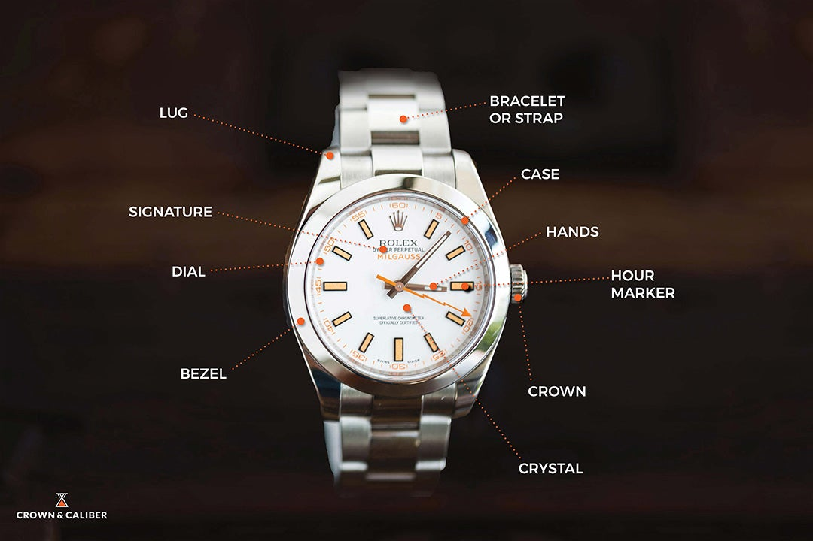
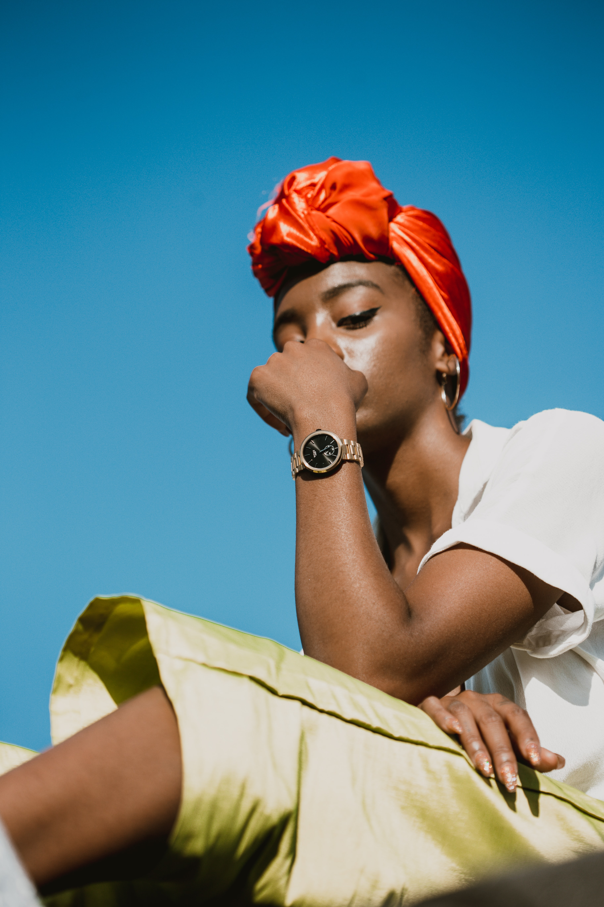
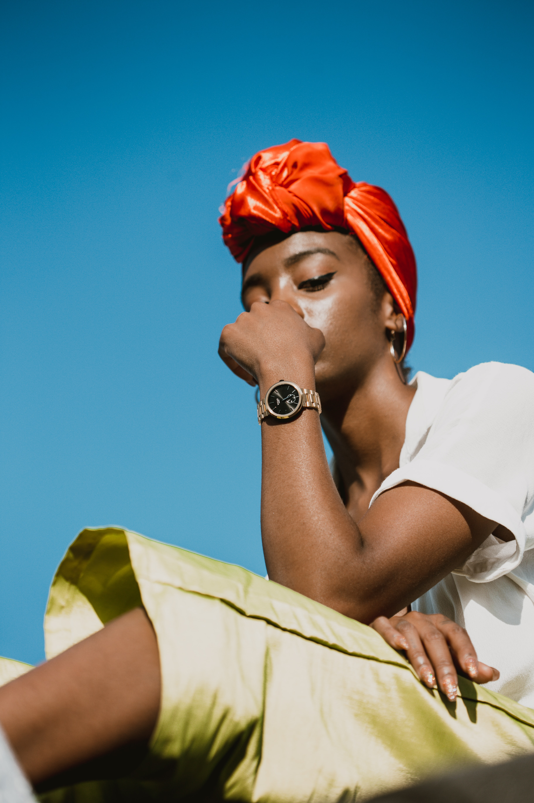

Welcome to my website about watches. This website covers a few different facets of watches including: components of a watch, different features a watch can have, watch brands and watch movements.

Watch Diagram
Here is a diagram of the many components of a watch.
 

- Bezel
- The bezel goes around the crystal of a watch and is usually made of metal or ceramic
- Bracelet or Strap
- These are the bands that secure a watch to a wrist. In order to be considered a bracelet, the band must be made of metal.
- Case
- The case is the part of the watch that contains the movement and dial. This protects them from normal wear and tear as well as the elements. They come in several different shapes and materials.
- Crown
- This is a knob on the outside of a watch case that sets the calendar and time. It also winds the watch.
- Crystal
- This is the transparent cover on the top of the dial or face. This is designed to protect the watch from dirt and water and reduce glare. The majority of modern Swiss timepieces have a sapphire crystal.
- Dial
- Also known as the face, the dial is the portion of the watch that displays the time. It can come in several different colors and marker combinations.
- Hand
- The hands are the markers on the dial that indicate time. Most watches have at least three hands to show hours, minutes, and seconds.
- Hour Marker
- These are the indicators on the face of a watch that mark out the hours
- Lug
- These are projections on the watch case that secure the strap or watch bracelet to the case.
- Signature
- This is the manufacturers information on the dial of the watch.
- Source:
- Source